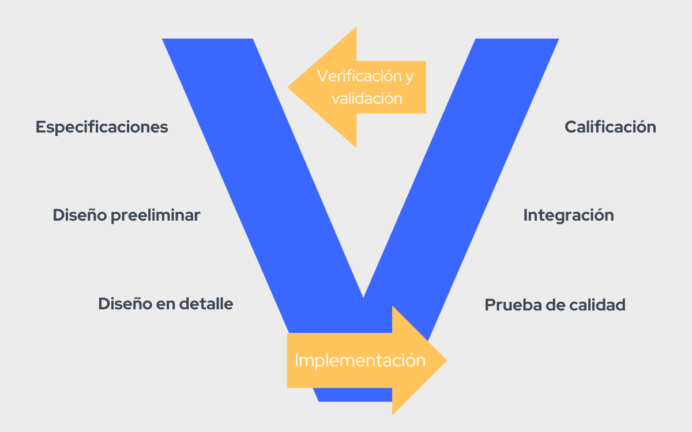

Método en V
- Es un modelo de gestión de gestión de proyectos, centrados en el desarrollo de productos TIC
- Inspirado en el modelo en cascada
- Muchas estructuras encuentran que el ciclo en V sigue siendo funcional para la gestión empresarial
Divide el proceso en tres partes: diseño, implementación y pruebas de integración y cualificación.

Lado izquierdo: Necesidades y especificaciones del proyecto
Lado derecho: Verificacion de las necesidades
- Minimización de los riesgos del proyecto
Mejora la transparencia del proyecto y control del proyecto, especificando los enfoques estandarizados, describe los resultados correspondientes y funciones de responsabilidad. Permite una detección temprana de las desviaciones y los riesgos y mejora la gestión de procesos, reduciendo así los riesgos del proyecto.
- Mejora y Garantía de Calidad
Como un modelo de proceso estándar, asegura que los resultados que se proporcionan sean completos y contengan la calidad deseada. Los resultados provisionales definidos se pueden comprobar en una fase temprana. La uniformidad en el contenido del producto mejora la legibilidad, comprensibilidad y verificabilidad.
- Reducción de los gastos totales durante todo el proyecto y sistema de Ciclo de Vida
El esfuerzo para el desarrollo, producción, operación y mantenimiento de un sistema puede ser calculado, estimado y controlado de manera transparente mediante la aplicación de un modelo de procesos estandarizados. Reduciendo la dependencia en los proveedores y el esfuerzo para las siguientes actividades y proyectos.
- Mejora de la comunicación entre todos los inversionistas
La descripción estandarizada y uniforme de todos los elementos pertinentes y términos es la base para la comprensión mutua entre todos los inversionistas. De este modo, se reduce la pérdida por fricción entre el usuario, comprador, proveedor y desarrollador.
- Minimización de los riesgos del proyecto
Mejora la transparencia del proyecto y control del proyecto, especificando los enfoques estandarizados, describe los resultados correspondientes y funciones de responsabilidad. Permite una detección temprana de las desviaciones y los riesgos y mejora la gestión de procesos, reduciendo así los riesgos del proyecto.
- Mejora y Garantía de Calidad
Como un modelo de proceso estándar, asegura que los resultados que se proporcionan sean completos y contengan la calidad deseada. Los resultados provisionales definidos se pueden comprobar en una fase temprana. La uniformidad en el contenido del producto mejora la legibilidad, comprensibilidad y verificabilidad.